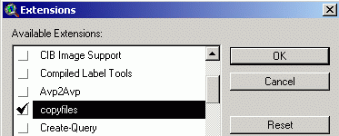

Deleting and copying vector and raster themes both from Arcview TOC and physically
Small Arcview GIS extension which can help more easily operate themes in TOC
*TOC - table of contents. Portion of the View window were all operations on themes are being carried out.
This extension can be useful if you're working with large amounts of raster and vector themes loaded into TOC. Sometimes, you need not only to remove selected themes from TOC, but also to get rid of them physically on disk. This is a common task for remote sensing data selection process. Equally, this extension can be used also for physically copying selected themes and associated files into different folder.

This extension is different from standard Arcview function Manage Data Sources, this extension is working with TOC directly, on practice this means, that, after selection of the theme in TOC, you DON'T have to locate this theme in the file list of Manage Data Sources dialog. So all you need is only select your theme or themes and choose operation (copy or delete).
This extension allows:
1. Copy into different folder raster/vector files including Image Analysis themes, together with *.avl, aux,
rrd, sbn, sbx, tfw files  .
.
2. Remove from TOC and physically (from the hard drive) selected raster/vector themes, excluding Image Analysis themes .
.
Дата создания: 08.12.2002
Автор(ы): Максим Дубинин